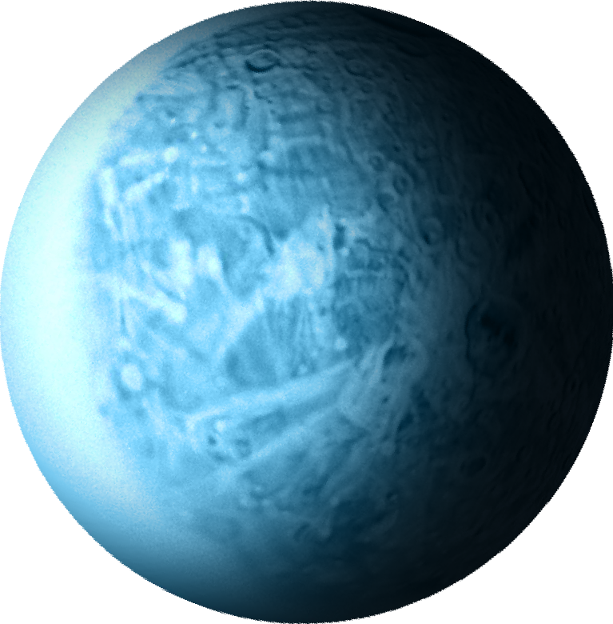
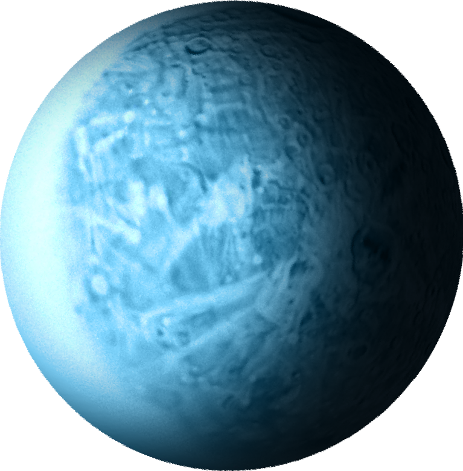
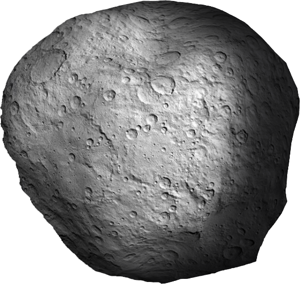
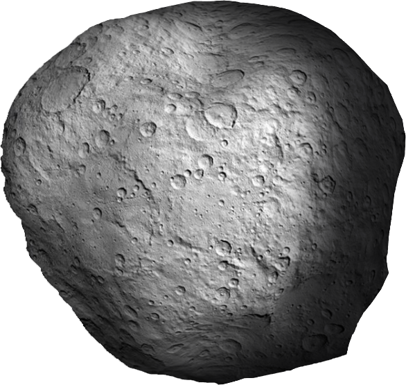

Mercury
The smallest planet in our solar system and nearest to the Sun, Mercury is only slightly larger than Earth's Moon.
From the surface of Mercury, the Sun would appear more than three times as large as it does when viewed from Earth, and the sunlight would be as much as seven times brighter. Despite its proximity to the Sun, Mercury is not the hottest planet in our solar system – that title belongs to nearby Venus, thanks to its dense atmosphere.
Because of Mercury's elliptical – egg-shaped – orbit, and sluggish rotation, the Sun appears to rise briefly, set, and rise again from some parts of the planet's surface. The same thing happens in reverse at sunset.
Venus
Venus is the second planet from the Sun and is Earth's closest planetary neighbor. It's one of the four inner, terrestrial (or rocky) planets, and it's often called Earth's twin because it's similar in size and density. These are not identical twins, however – there are radical differences between the two worlds.
Venus has a thick, toxic atmosphere filled with carbon dioxide and it's perpetually shrouded in thick, yellowish clouds of sulfuric acid that trap heat, causing a runaway greenhouse effect. It's the hottest planet in our solar system, even though Mercury is closer to the Sun. Surface temperatures on Venus are about 900 degrees Fahrenheit (475 degrees Celsius) – hot enough to melt lead. The surface is a rusty color and it's peppered with intensely crunched mountains and thousands of large volcanoes. Scientists think it's possible some volcanoes are still active.
Another big difference from Earth – Venus rotates on its axis backward, compared to most of the other planets in the solar system. This means that, on Venus, the Sun rises in the west and sets in the east, opposite to what we experience on Earth. (It's not the only planet in our solar system with such an oddball rotation – Uranus spins on its side.)
Earth
Earth is the third planet from the Sun and home to all known life. While large volumes of water can be found throughout the Solar System, only Earth sustains liquid surface water. Approximately 70.8% of Earth's surface is made up of the ocean, dwarfing Earth's polar ice, lakes, and rivers. The remaining 29.2% of Earth's surface is land, consisting of continents and islands. Earth's surface layer is formed of several slowly moving tectonic plates, which interact to produce mountain ranges, volcanoes, and earthquakes.
The atmosphere of Earth consists mostly of nitrogen and oxygen. Greenhouse gases in the atmosphere like carbon dioxide trap a part of the energy from the Sun close to the surface. Water vapor is widely present in the atmosphere and forms clouds that cover most of the planet. More solar energy is received by tropical regions than polar regions and is redistributed by atmospheric and ocean circulation. A region's climate is governed not only by latitude but also by elevation and proximity to moderating oceans.
Earth is an ellipsoid with a circumference of about 40,000 km. It is the densest planet in the Solar System. Of the four rocky planets, it is the largest and most massive. Earth is about eight light-minutes away from the Sun and orbits it, taking a year (about 365.25 days) to complete one revolution. The Earth rotates around its own axis in slightly less than a day (in about 23 hours and 56 minutes).
Moon
The Moon is Earth's only natural satellite. It is the fifth largest satellite in the Solar System and the largest and most massive relative to its parent planet, with a diameter about one-quarter that of Earth (comparable to the width of Australia). The Moon is a planetary-mass object with a differentiated rocky body, making it a satellite planet under the geophysical definitions of the term and larger than all known dwarf planets of the Solar System. It lacks any significant atmosphere, hydrosphere, or magnetic field.
The Moon orbits Earth at an average distance of 384,400 km, or about 30 times Earth's diameter. Its gravitational influence is the main driver of Earth's tides and very slowly lengthens Earth's day. The Moon's orbit around Earth has a sidereal period of 27.3 days. During each synodic period of 29.5 days, the amount of visible surface illuminated by the Sun varies from none up to 100%, resulting in lunar phases that form the basis for the months of a lunar calendar. The Moon is tidally locked to Earth, which means that the length of a full rotation of the Moon on its own axis causes its same side (the near side) to always face Earth, and the somewhat longer lunar day is the same as the synodic period.
Mars
Mars is the fourth planet from the Sun – a dusty, cold, desert world with a very thin atmosphere. Mars is also a dynamic planet with seasons, polar ice caps, canyons, extinct volcanoes, and evidence that it was even more active in the past.
Mars is one of the most explored bodies in our solar system, and it's the only planet where we've sent rovers to roam the alien landscape.An international fleet of eight orbiters is studying the Red Planet from above including three NASA orbiters: 2001 Mars Odyssey, Mars Reconnaissance Orbiter, and MAVEN.
NASA currently has two rovers (Curiosity and Perseverance), one lander (InSight), and one helicopter (Ingenuity) exploring the surface of Mars.Perseverance rover – the largest, most advanced rover NASA has sent to another world – touched down on Mars on Feb. 18, 2021, after a 203-day journey traversing 293 million miles (472 million kilometers). The Ingenuity helicopter rode to Mars attached to the belly of Perseverance. Perseverance is one of three spacecraft that arrived at Mars in 2021. The Hope orbiter from the United Arab Emirates arrived on Feb. 9, 2021. China's Tianwen-1 mission arrived on Feb. 10, 2021, and includes an orbiter, a lander, and a rover. Europe and India also have spacecraft studying Mars from orbit.
Phobos and Deimos
The two moons of Mars are Phobos and Deimos. They are irregular in shape. Both were discovered by American astronomer Asaph Hall in August 1877 and are named after the Greek mythological twin characters Phobos (fear and panic) and Deimos (terror and dread) who accompanied their father Ares into battle. Ares, god of war, was known to the Romans as Mars.
Compared to the Earth's Moon, the moons Phobos and Deimos are small. Phobos has a diameter of 22.2 km (13.8 mi) and a mass of 1.08*1016 kg, while Deimos measures 12.6 km (7.8 mi) across, with a mass of 2.0*1015 kg. Phobos orbits closer to Mars, with a semi-major axis of 9,377 km (5,827 mi) and an orbital period of 7.66 hours; while Deimos orbits farther with a semi-major axis of 23,460 km (14,580 mi) and an orbital period of 30.35 hours.

Jupiter
Jupiter is the fifth planet from the Sun and the largest in the Solar System. It is a gas giant with a mass more than two and a half times that of all the other planets in the Solar System combined, while being slightly less than one-thousandth the mass of the Sun. Jupiter is the third brightest natural object in the Earth's night sky after the Moon and Venus, and it has been observed since prehistoric times. It was named after Jupiter, the chief deity of ancient Roman religion.
Jupiter is primarily composed of hydrogen, followed by helium which constitutes a quarter of its mass and a tenth of its volume. The ongoing contraction of Jupiter's interior generates more heat than the planet receives from the Sun. Because of its rapid rotation at a rate of 1 rotation per 10 hours, the planet's shape is an oblate spheroid, having a slight but noticeable bulge around the equator. The outer atmosphere is divided into a series of latitudinal bands, with turbulence and storms along their interacting boundaries. A prominent result of this is the Great Red Spot, a giant storm which has been observed since at least 1831.
Jupiter is surrounded by a faint planetary ring system and has a powerful magnetosphere. The planet's magnetic tail is nearly 800 million kilometres (5.3 astronomical units; 500 million miles) long. Jupiter has 92 known moons and likely many more, including the four large moons discovered by Galileo Galilei in 1610: Io, Europa, Ganymede, and Callisto. Ganymede is the largest out of the four, being larger than the planet Mercury, followed by Callisto with Io and Europa being approximately the size of Earth's moon.
Ganymede and Io
Jupiter's icy moon Ganymede is the largest moon in our solar system, even bigger than the planet Mercury, and the dwarf planet Pluto. There's strong evidence that Ganymede has an underground saltwater ocean that may hold more water than all the water on Earth's surface. It might even have ice and oceans stacked up in several layers like a club sandwich.
Ganymede is the only moon known to have its own magnetic field – something typically found on planets like Earth. The magnetic field causes auroras, or bright ribbons of glowing gas, that circle the moon's poles.
Io, or Jupiter I, is the innermost and third-largest of the four Galilean moons of the planet Jupiter. Slightly larger than Luna, Io is the fourth-largest moon in the Solar System, has the highest density of any moon, the strongest surface gravity of any moon, and the lowest amount of water (by atomic ratio) of any known astronomical object in the Solar System. It was discovered in 1610 by Galileo Galilei and was named after the mythological character Io, a priestess of Hera who became one of Zeus's lovers.
Saturn
Saturn is the sixth planet from the Sun and the second-largest in the Solar System, after Jupiter. It is a gas giant with an average radius of about nine and a half times that of Earth. It has only one-eighth the average density of Earth, but is over 95 times more massive.
Saturn's interior is most likely composed of a rocky core, surrounded by a deep layer of metallic hydrogen, an intermediate layer of liquid hydrogen and liquid helium, and finally, a gaseous outer layer. Saturn has a pale yellow hue due to ammonia crystals in its upper atmosphere. An electrical current within the metallic hydrogen layer is thought to give rise to Saturn's planetary magnetic field, which is weaker than Earth's, but which has a magnetic moment 580 times that of Earth due to Saturn's larger size.
The planet's most notable feature is its prominent ring system, which is composed mainly of ice particles, with a smaller amount of rocky debris and dust. At least 83 moons are known to orbit Saturn, of which 53 are officially named; this does not include the hundreds of moonlets in its rings. Titan, Saturn's largest moon and the second largest in the Solar System, is larger (while less massive) than the planet Mercury and is the only moon in the Solar System to have a substantial atmosphere.
Titan and Enceladus
Titan is the largest moon of Saturn and the second-largest natural satellite in the Solar System. It is the only moon known to have a dense atmosphere, and is the only known object in space other than Earth on which clear evidence of stable bodies of surface liquid has been found.
Titan is one of the seven gravitationally rounded moons in orbit around Saturn, and the second most distant from Saturn of those seven. Frequently described as a planet-like moon, Titan is 50% larger (in diameter) than Earth's Moon and 80% more massive. It is the second-largest moon in the Solar System after Jupiter's moon Ganymede, and is larger than the planet Mercury, but only 40% as massive.
Enceladus is the sixth-largest moon of Saturn (19th largest in the Solar System). It is about 500 kilometers (310 miles) in diameter, about a tenth of that of Saturn's largest moon, Titan. Enceladus is mostly covered by fresh, clean ice, making it one of the most reflective bodies of the Solar System. Consequently, far colder than a light-absorbing body would be.


Uranus
Uranus is the seventh planet from the Sun. It is named after Greek sky deity Uranus (Caelus), who in Greek mythology is the father of Cronus (Saturn), a grandfather of Zeus (Jupiter) and great-grandfather of Ares (Mars). Uranus has the third-largest planetary radius and fourth-largest planetary mass in the Solar System. The planet is similar in composition to Neptune, and both have bulk chemical compositions which differ from those of the other two giant planets, Jupiter and Saturn (the gas giants). For this reason, scientists often distinguish Uranus and Neptune as "ice giants".
As with gas giants, ice giants lack a well-defined solid surface. Uranus's atmosphere is similar to Jupiter's and Saturn's in its primary composition of hydrogen and helium, but it contains more "ices" such as water, ammonia, and methane, along with traces of other hydrocarbons. It has the coldest planetary atmosphere in the Solar System. It has a complex, layered cloud structure; water is thought to make up the lowest clouds and methane the uppermost layer. The planet's interior is mainly composed of ices and rock.
Like the other giant planets, Uranus has a ring system, a magnetosphere, and numerous moons. The Uranian system has a unique configuration because its axis of rotation is tilted sideways, nearly into the plane of its solar orbit. Therefore, its north and south poles lie where most other planets have their equators. In 1986, images from Voyager 2 showed Uranus as an almost featureless planet in visible light, without the cloud bands or storms associated with the other giant planets. No other spacecraft have yet visited the planet. Observations from Earth have shown seasonal change and increased weather activity as Uranus approached its equinox in 2007.
Titania and Oberon
Titania, also designated Uranus III, is the largest of the moons of Uranus and the eighth largest moon in the Solar System at a diameter of 1,578 kilometres (981 mi). Discovered by William Herschel in 1787, it is named after the queen of the fairies in Shakespeare's A Midsummer Night's Dream. Its orbit lies inside Uranus's magnetosphere.
The Uranian system has been studied up close only once, by the spacecraft Voyager 2 in January 1986. It took several images of Titania, which allowed mapping of about 40% of its surface.
Oberon, also designated Uranus IV, is the outermost major moon of the planet Uranus. It is the second-largest and second most massive of the Uranian moons, and the ninth most massive moon in the Solar System. Discovered by William Herschel in 1787, Oberon is named after the mythical king of the fairies who appears as a character in Shakespeare's A Midsummer Night's Dream. Its orbit lies partially outside Uranus's magnetosphere.
The Uranian system has been studied up close only once: the spacecraft Voyager 2 took several images of Oberon in January 1986, allowing 40% of the moon's surface to be mapped.
 

Neptune
Neptune is the eighth and furthest planet in the Solar System from the Sun. It was discovered in 1846 on the basis of mathematical calculations and predictions of a backward impact on the orbit of Uranus. Neptune was named after the ancient Roman god of the seas. This gas giant planet is composed mainly of hydrogen, helium and traces of methane, which gives it its bright blue coloring.
Methane clouds in the upper atmosphere reflect sunlight, which creates a bright blue hue on the visible side of the planet. Violent atmospheric phenomena such as vortices and storms are characteristic of Neptune, making it one of the most dynamic objects in the Solar System.
Neptune has icy clouds and strong winds reaching over 2000 kilometres per hour. These winds create powerful violent storms, including the famous "Great Dark Spot" that was spotted by Russell Hertz in 1989. Studying the extreme conditions on Neptune is helping to expand our understanding of planetary physics and astronomy.
Triton and Proteus
Triton is the largest natural satellite of the planet Neptune, and was the first Neptunian moon to be discovered, on October 10, 1846, by English astronomer William Lassell. It is the only large moon in the Solar System with a retrograde orbit, an orbit in the direction opposite to its planet's rotation. Because of its retrograde orbit and composition similar to Pluto, Triton is thought to have been a dwarf planet, captured from the Kuiper belt.
During its 1989 flyby of Triton, Voyager 2 found surface temperatures of 38 K (-235 °C) and also discovered active geysers erupting sublimated nitrogen gas, contributing to a tenuous nitrogen atmosphere less than 1/70,000 the pressure of Earth's atmosphere at sea level. Voyager 2 remains the only spacecraft to have visited Triton. As the probe was only able to study about 40% of the moon's surface, future missions (Dubbed "Trident") have been proposed to Nasa via their Discovery Program to revisit the Neptune system with a focus on Triton.
Proteus, also known as Neptune VIII, is the second-largest Neptunian moon, and Neptune's largest inner satellite. Discovered by Voyager 2 spacecraft in 1989, it is named after Proteus, the shape-changing sea god of Greek mythology. Proteus orbits Neptune in a nearly equatorial orbit at a distance of about 4.75 times the radius of Neptune's equator.
Proteus is probably not an original body that formed with Neptune. It could have accreted later from the debris formed when the largest Neptunian satellite Triton was captured.
 
